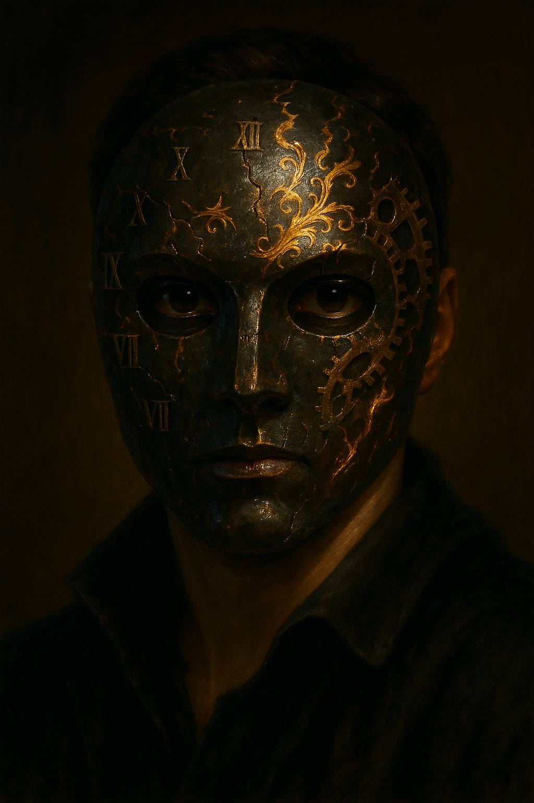

Goupil Masquerade
Overview
A masquerade soirée hosted by Monsieur Goupil at Maison_du_Corbeau in Lyon, with Savarin as the true orchestrator. The investigators attended in disguise and witnessed the Choir’s supernatural and human horror combined for the first time — a Formless Spawn summoned through an aperture in the floor, and a child sacrificed with a tuning-fork blade.
What Happened
The investigators obtained invitations through various means — dropped, pickpocketed, or given by other guests — and attended the soirée in their masks. Behind the social facade, the evening concealed a secret ritual in a hidden chamber.
They witnessed the ritual: a Formless Spawn rising through an aperture in the floor, and a child sacrifice performed with a tuning-fork blade. The party observed everything and did not intervene. They left traumatized, carrying knowledge they could not set down.
Sanity Impact
SAN losses from witnessing the ritual were significant. Seeing the Formless Spawn: 1/1D6. Witnessing the child sacrifice: 1D4/1D20.
Campaign Significance
The masquerade was the investigators’ first direct witness of the Choir’s supernatural and human horror combined. The decision not to intervene — whether from shock, tactical calculation, or helplessness — weighed on the party throughout the rest of the Lyon chapter.
The Masks



The Formless Spawn